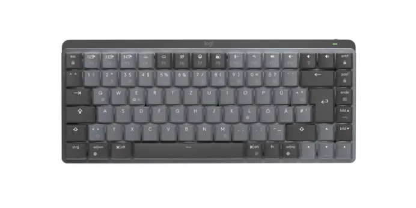

Mx Keyboard
Todo el mundo ha visto o usado este ratón alguna vez, este en concreto es de la marca LogiTech. Se trata de un ratón sencillo, pero imprescindible para poder usar un ordenador, o un portatil de manera más cómoda.
Mi experiencia de muchos años con este ratón es neutra. Pero siendo uno de los ratones más asequibles le convierte en uno de los más usados entre usuarios que utilizan el ordenador casualmente o, incluso, por algunos que trabajan con programas de ofimática.
El ratón cuenta con los botones básicos de todo ratón, click derecho e izquierdo, rueda central y el botón de la rueda.
Para aquellos que no quieran complicarse la vida buscando un ratón muy caro y ostentoso, esta es una muy buena elección, pues va a durar durante muchos años antes de que tenga que ser cambiado de nuevo.
Además, se trata de un ratón poco pesado y cómodo a la mano, para que cuando se esté trabajando muchas horas en el ordenador, el usuario no sienta fatiga en la mano.
Sin embargo, este ratón no es para todo los públicos, pues aquellas personas que al trabajar muhcas horas sentadas en el ordenador, pueden obtener dolor de la articulación de la muñeca, para estos casos recominedo unos ratones especialmente creados para dicho problema, los ratones ergonómicos.
Podeis echar un vistazo a un artículo de esta misma página que explica más sobre este tipo de ratones y sus ventajas aquí.
Pero si estas interesado en este modelo, se encuentra en por unos 14,99€ en LogiTech.
A continuación se van a mostrar las vetajas e inconvenientes del producto:
Ventajas:
Desvantajas:
En conclusión, se trata de un ratón de gamma mas bien baja que es prácticamente esencial, un ratón por debajo de este nivel sería cualquiera de "marca blanca", pero se trata de un buen ratón para tareas sencillas. Pero no tanto para jugar, ya que su sensor óptico no tiene la suficiente precisión como para poder apuntar correctamente.
5/10